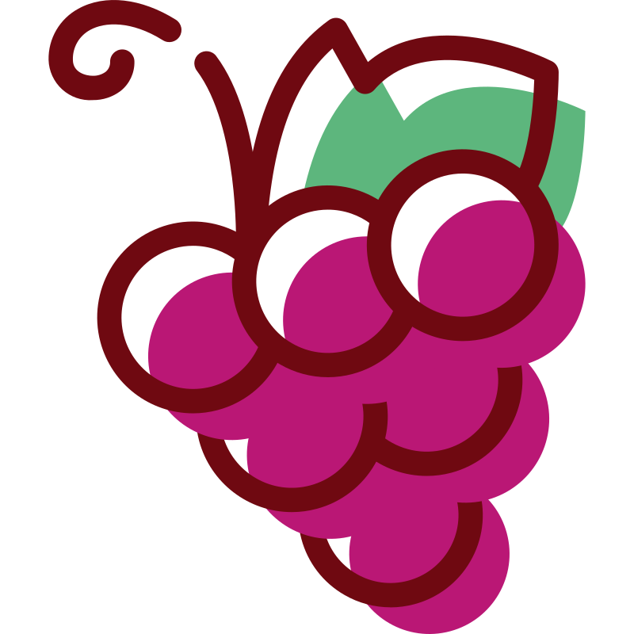

Встановлення VS Code
Встановлення VS Code
Python
Спершу треба встановити Python. Це сама мова програмування та програма-інтерпретатор, яка безпосередньо виконує код. Без нього комп'ютер не зможе зрозуміти та запустити написані скрипти.
Посилання: https://www.python.org/downloads/.
VS Code
Тепер можна встановлювати VS Code. Це сучасний редактор коду (середовище розробки), у якому ми будемо писати, редагувати та запускати програми.
Посилання: https://code.visualstudio.com/download.
Розширення (Extensions)
Розширення — це додаткові інструменти, які вбудовуються у VS Code, щоб навчити його працювати з конкретними мовами та зробити процес написання коду зручнішим.
Щоб їх встановити, відкрий панель зліва зі значком чотирьох кубиків (або натисни Ctrl+Shift+X), введи назву розширення в поле пошуку та натисни кнопку Install.
Корисні розширення для роботи з Python:
- Python (від Microsoft) — додає підсвітку синтаксису, автодоповнення, запуск і дебаг Python-коду прямо у VS Code.
- Black Formatter (від Microsoft) — автоматично «підрівнює» код (відступи, пробіли, лапки) за єдиним стандартом, щоб він виглядав акуратно й однаково в усіх файлах.
 Використання VS Code
Використання VS Code
Основи користування
Щоб комфортно працювати в редакторі, варто одразу запам'ятати кілька базових дій та налаштувань:
- Автозбереження (Autosave): File → Auto Save. Вмикаємо один раз — і більше не треба хвилюватися про втрату даних. Файл зберігатиметься сам при кожній зміні, комбінація Ctrl+S більше не потрібна.
- Як відкрити робочу папку: File → Open Folder... → обрати або створити папку проєкту на комп'ютері. Ця папка стає робочою областю ("workspace") — VS Code показуватиме всі її файли у бічній панелі (Explorer) зліва.
- Як створити новий файл: у бічній панелі (Explorer) навести курсор на назву папки → натиснути іконку "New File" (або клік правою кнопкою миші → New File) → ввести назву файлу, що обов'язково закінчується розширенням .py → натиснути Enter.
- Як відкрити термінал: Terminal → New Terminal, або швидка комбінація Ctrl+`. Термінал — це командний рядок, вбудований прямо в редактор. В ньому можна запускати програму і бачити її результат.
- Як запустити програму: у терміналі ввести команду python назва_файлу.py і натиснути Enter.
- Швидкий повтор команд: замість того, щоб щоразу вводити команду запуску вручну, натисни стрілку вгору на клавіатурі. Це дозволить "прогорнути" історію попередніх команд і швидко запустити потрібну.
- Очищення терміналу: якщо на екрані зібралося забагато тексту, введи команду cls, або використай комбінацію Ctrl+L.
- IntelliSense: це розумна система підказок. Під час написання коду вона сама пропонує варіанти (назви змінних, функцій тощо). Випадаючий список можна гортати стрілками, а обраний варіант одразу підставити клавішею Tab або Enter. Це суттєво економить час.
- Швидкі коментарі: щоб тимчасово вимкнути частину коду, виділи потрібні рядки мишкою і натисни комбінацію Ctrl + /. Це автоматично закоментує код (або розкоментує, якщо натиснути ще раз).
Практика роботи у VS Code
Завдання 1
Виконай ці кроки послідовно, щоб перевірити, як усе працює на практиці:
- Згорни VS Code та створи на робочому столі комп'ютера звичайну папку з назвою python.
- Відкрий цю папку у VS Code через меню File → Open Folder....
- Використовуючи бічну панель (Explorer) у VS Code, створи всередині папки новий файл з назвою hello.py.
-
Напиши у файлі традиційний код привітання:
print("Hello, world!") - Відкрий термінал у VS Code.
-
Запусти програму командою:
python hello.py
 Частина 3: Списки
Частина 3: Списки
1. Створення та доступ до елементів
Списки створюються за допомогою квадратних дужок [], а елементи розділяються комами. Щоб отримати конкретний елемент, використовують його індекс (порядковий номер), причому нумерація починається з нуля.
Функція len() дозволяє дізнатися загальну кількість елементів, а спеціальний цикл for item in list – пройтися по всіх елементах по черзі.
my_list = [] # порожній список
shapes = ["circle", "square", "triangle", "rectangle", "hexagon"] # список з рядками
print(shapes) # вивід усього списку
print(shapes[0]) # доступ до першого елемента -> "circle"
print(shapes[2]) # доступ до третього елемента -> "triangle"
n = len(shapes)
print(f"There are {n} words in the list")
# цикл для проходження по всіх елементах списку
for shape in shapes:
print(f"Shape: {shape}.")2. Копіювання та перемішування
Іноді нам потрібно змінити порядок елементів (наприклад, перемішати слова для тесту), але при цьому зберегти оригінальний список недоторканим. Для цього можна спочатку створити незалежну копію списку за допомогою методу .copy(), а потім застосовати функцію random.shuffle().
import random
shapes_copy = shapes.copy() # створюємо незалежну копію
random.shuffle(shapes_copy) # перемішуємо елементи в копії
print(shapes) # оригінальний список залишився без змін
print(shapes_copy) # копія тепер має випадковий порядок елементів3. Зрізи (Slicing)
Зрізи дозволяють "відрізати" й отримати лише певну частину списку. Для цього у квадратних дужках вказують індекс початку та кінця: [старт:кінець]. Важливо: елемент "старт" включається у зріз, а "кінець" — ні.
# Зріз створює новий список на основі частини старого
print(shapes[1:4]) # від індексу 1 до 3 (тобто 1, 2, 3)
print(shapes[2:]) # від індексу 2 до самого кінця
print(shapes[:3]) # від початку до індексу 2
part = shapes[2:4] # можна зберегти зріз у змінній
print(part)
# Якщо вказати число, більше за довжину списку, помилки не буде:
print(shapes[:1000])Практика
Завдання 2
Ця вправа моделює ситуацію, коли дано список слів, і користувач обирає, скільки з них він хоче потренувати за один раз.
- Створи список math_terms із 6-ти рядків: add, subtract, multiply, divide, sum, product.
- Створи копію цього списку і збережи її у новій змінній terms_copy.
- Перемішай створену копію за допомогою відповідної функції з random.
- За допомогою функції визначення довжини списку виведи повідомлення: "There are [N] words in the list".
- Запитай у користувача, скільки слів він хоче потренувати, та одразу перетвори відповідь на ціле число ("How many words do you want to practice? ")
- Застосуй зріз до перемішаної копії списку, щоб у ньому залишилося максимум стільки слів, скільки ввів користувач. Запиши результат зрізу назад в ту саму змінну terms_copy.
- За допомогою циклу for виведи на екран фінальний список слів (кожен елемент з нового рядка).

Частина 4: СловникиСтворення та доступ до значень
Словник зберігає дані у вигляді пар ключ: значення. Під час його створення ми використовуємо фігурні дужки {}, між ключем і значенням ставимо двокрапку :, а самі пари розділяємо комами.
Щоб отримати значення, потрібно звернутися до нього за ключем. Існує два способи: через квадратні дужки або через метод .get(). Метод .get() безпечніший — якщо шуканого ключа в словнику немає, він поверне None (порожнечу), тоді як квадратні дужки викличуть помилку і зупинять програму.
word_data = {
"eng": "equation",
"ukr": "рівняння"
}
# Доступ через квадратні дужки
print(word_data["eng"]) # -> "equation"
# Безпечний доступ через метод .get()
print(word_data.get("ukr")) # -> "рівняння"
print(word_data.get("esp")) # Поверне None, програма не зламається через відсутність ключа
# Можна спершу зберегти у змінній:
eng_word = word_data.get("eng")
print(eng_word)Практика
Завдання 3
- Створи словник word, що містить ключі eng та ukr, і запиши в них англійський математичний термін (fraction) та його переклад (дріб).
- Створи дві змінні: question_word та correct_answer. За допомогою методу безпечного доступу запиши в першу змінну англійське слово зі словника, а в другу — український переклад. Одразу застосуй до перекладу метод .lower(), щоб уникнути проблем з великими літерами. Виведи обидві змінні на екран, щоб перевірити, чи все працює.
- Додай змінну mode, яка запитуватиме в користувача режим роботи: "Choose mode (1 - Eng->Ukr, 2 - Ukr->Eng): ".
-
Тепер зміни код із кроку 2:
змінні question_word та
correct_answer повинні
створюватись всередині конструкції
if/else, яка перевірятиме
значення mode:
- Якщо користувач обрав "1", question_word має отримувати англійське слово, а correct_answer – українське.
- В іншому випадку – навпаки (і не забудь застосувати метод .lower() до англійської відповіді в else).
- Виведи question_word на екран.
- Створи змінну user_answer, яка прийматиме відповідь користувача ("Translate this word: "). Одразу застосуй до неї методи .lower() та .strip().
- Додай фінальну перевірку: якщо введена відповідь збігається з correct_answer, виведи "Correct!". Інакше виведи "Wrong. The correct answer is [правильна відповідь]".